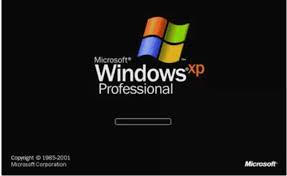
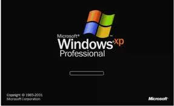
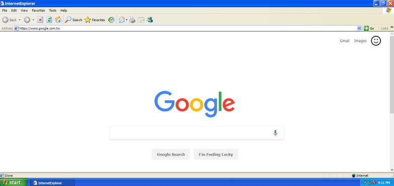
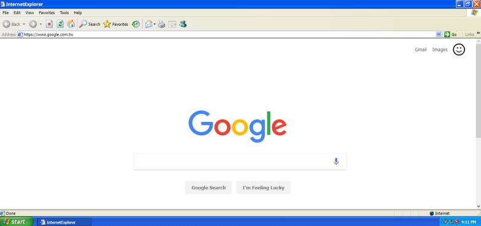

Windows XP
O Windows XP é uma família de sistemas operacionais de 32 e 64 bits produzido pela Microsoft, para uso em computadores pessoais, incluindo computadores residenciais e de escritório, notebooks, tablets e media centers. O nome "XP" deriva de eXPerience. O Windows XP é o sucessor de ambos os Windows 2000 e Windows ME e é o primeiro sistema operacional para consumidores produzido pela Microsoft construído em nova arquitetura e núcleo (Windows NT 5.1). O Windows XP foi lançado no dia 25 de Outubro de 2001 e mais de 400 milhões de cópias estavam em uso em Janeiro de 2006, de acordo com estimativas feitas naquele mês pela empresa de estatísticas IDC. Foi sucedido pelo Windows Vista lançado para pré-fabricantes no dia 8 de Novembro de 2006 e para o público em geral em 30 de Janeiro de 2007. Suas vendas cessaram no dia 30 de Junho de 2008, porém ainda era possível adquirir novas licenças com os desenvolvedores do sistema até 31 de Janeiro de 2009 ou comprando e instalando as edições Ultimate ou Business do Windows Vista e então realizando o downgrade para o Windows XP.
As duas principais edições do sistema operacional são o Windows XP Home Edition, que é destinada a utilizadores domésticos, e o Windows XP Professional Edition, que oferece recursos adicionais, tais como o Domínio de Servidor do Windows, dois processadores físicos e é direcionada a usuários avançados e a empresas. O Windows XP Media Center Edition tem mais recursos de multimédia possuindo a capacidade de gravar e sintonizar programas de televisão, ver filmes de DVD, e ouvir música. O Windows XP Tablet PC Edition é designado a rodar aplicações com o toquede uma caneta usando a plataforma Tablet PC. Duas versões separadas de 64-bit do Windows XP foram lançadas, a Windows XP 64-bit Edition para processadores IA-64 (Itanium) e a Windows XP Professional x64 Edition para x86-64. Existe também o Windows XP Embedded, uma versão voltada para dispositivos como caixas eletrônicos, e uma edição para mercados específicos e iniciantes, o Windows XP Starter Edition.
O Windows XP é conhecido pela sua estabilidade e eficiência que melhorou ao longo das versões 9x do Microsoft Windows. Ele apresenta uma nova interface gráfica, uma mudança que o tornou mais amigável do que versões anteriores do Windows. É também a primeira versão do Windows a usar um programa de ativação na luta contra a pirataria de software, uma restrição que não foi muito bem aceita por muitos utilizadores que defendiam a privacidade. O Windows XP também foi criticado por alguns utilizadores devido a vulnerabilidades de segurança, fraca integração entre aplicativos, como o Internet Explorer 6 e Windows Media Player, e para funções de contas de utilizadores. Suas últimas versões com o Service Pack 2, o 3 e o Internet Explorer 7 resolveram alguns desses problemas.
Requisitos Mínimos de Sistema
Processador de 233MHz
64 MB de memória
Monitor Super VGA (800 X 600)
100 MB de armazenamento ou superior
Leitores de CD-ROM
Mouse e teclado
Limite de Memória Física
Satrter Edition : 512MM
Home Edition/Media Center/Tablet PC/Professional : 4GB
Professional X64 : 128 GB
Línguas
O Windows XP está disponível em várias línguas. Em adição, add-ons que traduzem a interface do usuário também estão disponíveis para alguns idiomas.
Edições para mercados específicos
O Windows XP Starter Edition é uma versão de baixo custo do Windows XP avaliada para países em desenvolvimento como Tailândia, Turquia, Malásia, Indonésia, Rússia, Índia, Colômbia, Brasil, Argentina, Peru, Bolívia, Chile, México, Equador, Uruguai e Venezuela. Ele é uma versão mais enxuta do Windows XP Home cuja plataforma é baseada, só pode rodar 3 programas em 3 janelas por vez e outros recursos foram removidos ou desativados por padrão, possui o tema padrão do Windows 2000 dando um aspeto de versões antigas do Windows. O Starter Edition inclui alguns recursos especiais para mercados onde os consumidores não possuíam computador. Não encontrado na Home Edition, esta versão inclui recursos para ajudar aqueles que não falam Inglês, um wallpaper específico de cada país e, screensavers, e outras configurações padrão projetadas para facilitar a utilização típica do Windows XP. Na versão malaia, por exemplo, o plano de fundo da desktop é uma visão noturna de Kuala Lumpur e no Brasil é a imagem do Pão de Açúcar à noite.
Service Pack 1
O Service Pack 1 (SP1) do Windows XP, foi lançado em 9 de Setembro de 2002. Os recursos mais notados foram o suporte a USB 2.0 e o Definir Acesso e Padrões do Programa. Primeiramente os usuários especificavam qual browser e qual mensageiro instantâneo eles usariam, com acesso aos programas da Microsoft. O Service Pack 1a foi lançado ultimamente para remover o Microsoft Java Virtual Machine de acordo com a Sun Microsystems.
O suporte do Service Pack 1 acabou em 10 de Outubro de 2006.
Service Pack 2
O Service Pack 2 (SP2) (de nome de código "Springboard") foi lançado no dia 6 de Agosto de 2004, após detalhes severos, com ênfase na segurança. Anteriormente como nos outros service packs, o SP2 adicionou novas funcionalidades ao Windows XP, incluindo a instalação de um firewall, suporte à rede Wi-Fi com guia de introdução, bloqueador de pop-up no Internet Explorer, e suporte ao Bluetooth. Um dos maiores recursos de segurança adicionados foi o Windows Firewall que estava ativado por padrão, proteção avançada na memória e uma tecnologia chamada de NX Bit para proteger o processador de mais ataques virtuais; Além disso foi lançada a Central de Segurança do Windows um pacote de proteção que incluía o Firewall do Windows, a conexão com as atualizações automáticas e um antivírus que deveria ser instalado a parte. Outras novidades incluídas no pacote foram o Windows Media Player 9, o DirectX 9.0c e o Windows Movie Maker 2 com uma nova interface, efeitos de vídeo e opções que foram incorporadas ao programa.
O suporte do Service Pack 2 terminou no dia 13 de Julho de 2010.
Service Pack 3
O Microsoft Windows XP Service Pack 3 (SP3) começou a ser desenvolvido em Março de 2007. A versão final foi lançada no dia 6 de Maio de 2008.
O Service Pack 3 do Windows XP contém 113 atualizações de segurança e 958 correções. Não veio, entretanto com o Windows Internet Explorer 7 ou mesmo o Windows Media Player 11; a possibilidade de inserir a chave do produto no final da instalação, tornando assim mais ágil a instalação do Windows; a presença do NAP (Network Access Protection); detecção de “Black Hole Router” para proteger o sistema contra roteadores que estão descartando dados; um ganho de aproximadamente 10% em performance no computador, adicionado o suporte a redes wireless protegidas com passwords "WPA" e "WPA2", e o novo Módulo Criptográfico de Modo Núcleo existentes no Windows Vista.
Imagens
 Logo do Windows XP

Tela de início do Windows XP
Logo do Windows XP

Tela de início do Windows XP
 Área de trabalho do Windows XP
Menu Iniciar do Windows XP

Site 'Google' e navegador web 'Internet Explorer' do Windows XP
Área de trabalho do Windows XP
Menu Iniciar do Windows XP

Site 'Google' e navegador web 'Internet Explorer' do Windows XP